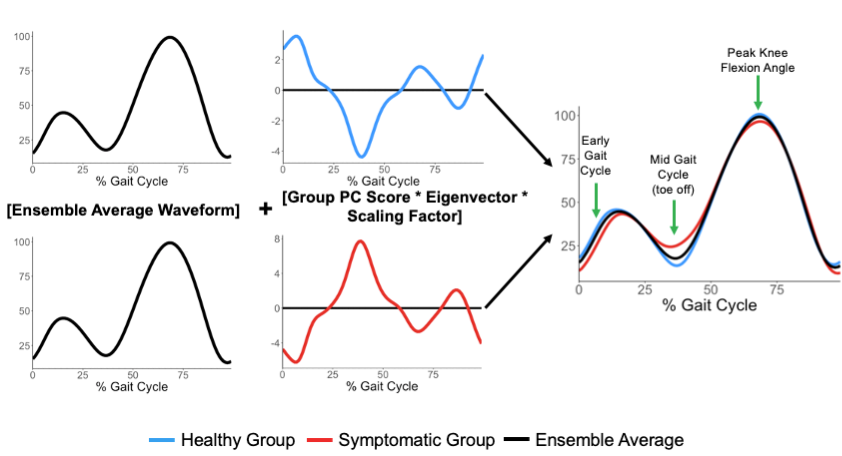
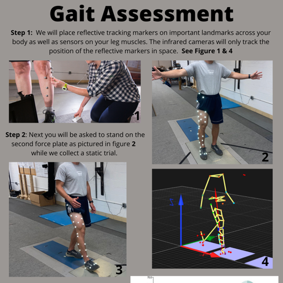

Research Portfolio
Projects from my research at UMass.
Unraveling Patellofemoral Pain: Subgroup Identification and Classification
Dissertation project
My dissertation project explored identifying and classifying patient specific injury mechanisms and factors related to development of patellofemoral pain using unsupervised and supervised machine learning models.
Link to Dissertation on Scholarworks
A data mining approach for determing biomechanical adaptations in runners who experienced and recovered from patellofemoral pain syndrome

The project was published in the Journal of Sports Sciences.
Drafted Publication Abstract:
Patellofemoral pain (PFP) is a common musculoskeletal pain disorder experienced by runners. Biomechanics of runners with PFP have been extensively studied, but methodological considerations may omit important biomechanical adaptations. Here, a data mining approach was used to account for the complexity of running gait instead of a priori selection of discrete variables. Gait mechanics of runners experiencing, recovered from, and who never experienced PFP were collected at the 1 st (M1) and 21 st (M21) minutes of a treadmill run. Time-series signals were reduced with principal component analysis, and principal component scores were fit to a logistic regression machine learning model. Important features for classifying healthy and symptomatic runners were determined, and recovered runners were classified into one of these groups. The M1 model achieved an accuracy of 82.76% with features related to knee flexion angle, hip abduction moment, and gluteus maximus activation. At M21, an additional nine features were required to achieve an accuracy of 79.31%. Recovered runners who experienced pain were classified as symptomatic. Data mining is a viable method for determining important features of gait in runners with PFP. Although pain has been mitigated, recovered runners may run with unhealthy gait mechanics and be at risk of reexperiencing PFP.
Click on the link below to see more information about this project (conference presentations, open source python code, and a blog post):
Understanding Fatigue in Older Adults

National Institute of Health Research Project Grant (R01)
The purpose of the UFO study (Understanding Fatigue in Older Adults) is to investigate the potential causes of muscle fatigue using magnetic resonance spectroscopy and its impact on single fibre, whole musce and gait function in young and older adults, including in those with signs of mobility problems such as slowed walking speed, low leg strength and some balance issues. I am responsible for running multiple visits for this R01 and collecting/analyzing:
- Anthropometric Data
- Data related to whole body mobility and function
- Overground walking gait data using 3D optical motion capture and embedded force plates
- Maximal isometric and isokinetic torque production of the knee extensors synchronized with electromyography
I have completed multiple analyses of these data and presented them at national and international conferences. More info on some of these project can be accessed through the following link:
This project is headed by 3 PIs from UMass (Dr. Jane Kent, Dr. Katherine Boyer, and Dr. Mark Miller). A blog with more details in this interdisciplinary project can be found here.
Assessing metabolic performance and comfort in casual shoes
Industry project funded by Clarks ®
Clarks contracted our lab to do an assessment of the metabolic performance and comfort of a new prototype running shoe. I was responsible for designing, organizing, and conducting this project from the bottom up including:
- Designing experiments testing the metabolic cost of walking in four different shoe conditions with a Parvo metabolic cart and a treadmill
- Recruitment of all participants
- Setting up a project on Redcap to streamline all data collection procedures
- Designing and executing surveys to subjectively assess shoe comfort
- Carrying out all data collections
- Processing, analyzing, and interpreting all results
- Statistically analyzing all processed data
- Summarizing findings for key stakeholders at Clarks ® in an industrial style report